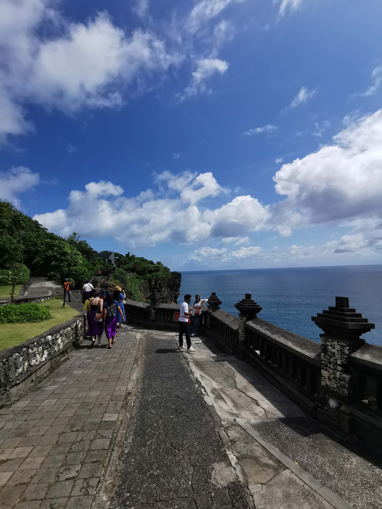
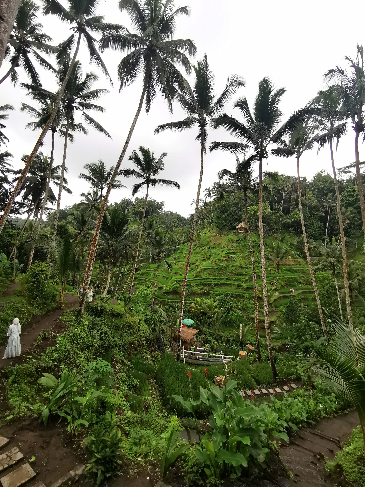
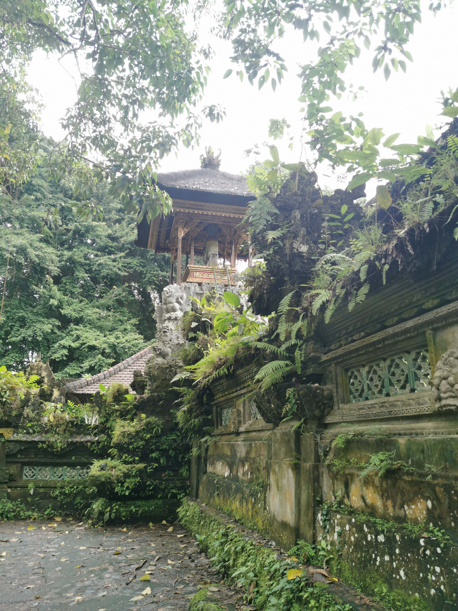
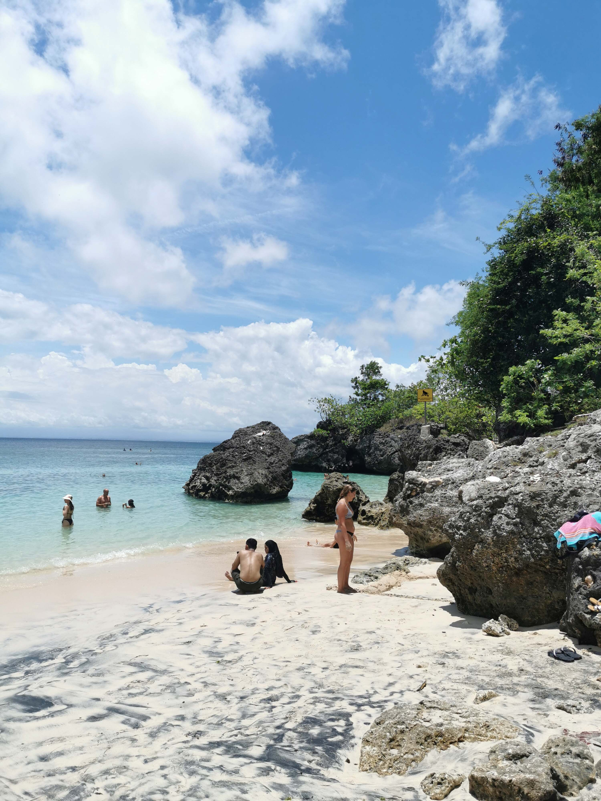

Bali
Published on 11 Mar 2023 02:11PM / 2996 words

See Bali once … and no more
Bali. Just the word evokes lush forests, rice terraces, yoga, coffee houses, dawn treks, and digital nomading. I didn’t particularly go for any of those but would be unfair to assert that I wasn’t captivated a bit by each. I found them all, but wasn’t fully satisfied by any.
Rewind to 2021. Coronavirus pandemic and all that. I was going to travel to Bali for the first time in my life during summer but touristic visa was not allowed for those that weren’t from a handful of south-east asian countries. Only a pricy business visa. Me and my girlfriend decided then to postpone the trip to the following year. We went instead to Mexico, which was amazing. I should write about it one day.
But back to Bali. Despite outrageous flight prices compared to 2021, I went for it anyway. In the calm season, October, shoulder month between the dry and the wet period of the year on the island. In retrospective it was not such a great idea, it rained more than I expected but we can’t always have nice vacation, can’t we? Heard that the week before we landed it was rain non-stop for 4 days so I consider myself lucky anyway. Overall we had at least 50% sunny days, about 40% partly cloudy ones, and only one or two were mainly rained. Not too shabby for the beginning of a rainy season.
The trip was meant both for exploring the interior and the Balinese culture, and to have some free days on the seaside, enjoying a beach vacation. We therefore opted to stay in Ubud, the heart of the island, and then to Gili Trawangan, a small party island nearby Bali that has amazing snorkeling opportunities and calm seas. Calm being the key word here. More on this later.
So how did it go? Not spectacularly. Bali didn’t live up to the expectations I had, nor to the image that is promoted of it. This is a cautionary tale for those who think that Bali is a tropical paradise, with beautiful beaches, great food, and cheap life.
Nothing is calm in Bali
You may have heard that traffic is horrible in Bali, and that is true. If you hate being stuck for an hour in it, you will hate half your Bali vacation. That’s the average time spent driving around the island, especially if you go by car (taxi or rental). With a scooter is better but not by a long stretch. The roads on the island are narrow and the number of scooters high. A deadly combination. If you want to accurately plan your time on Bali, add 50% to each segment of your trip that you are thinking about. 2 hours easily become 3, half an hour is at least 45 minutes and so on.
But the worst was not the traffic. There are few moments to feel calmn in Bali. Taxi drivers will offer their services every 10 metres when walking around, street pavements are uneven and full of dangerous holes, everybody will ask you for money for anything, even taking pictures in fully public places. As a tourist there will be few moments when you will feel at ease and undisturbed. I guess those paying for huge villas with private pools know it better than most. Your villa may well be the only piece of land in Bali that you will feel some calmness. Luckily I did rent one and I’d advise you to do the same.

This was in striking contrast with the peaceful and meditational image of the island that Bali is known for. Even going far away from human settlements, in a jungle for instance, means being aware of your surroundings for the lone monkey that has decided your shiny mobile phone cover is interesting and wants to permanently borrow it. Nobody wears sunglasses in Bali. Nobody that wants to keep them for long, at least. Monkeys are little pests with hands.
Perhaps you think that relaxing on a beach will be, well, relaxing? Usually, but not in Bali. Most of the popular beaches are overcrowded, even in the evenings, with locals barbecuing and hanging out. During the day tourists will scramble for a place on the best instagrammable stretches of sands. Come early or be ready to sit very close to strangers. And the sea itself is also far from calm. It is often choppy or wavy, and when it is not, strong currents can carry you away far from the coast. Every year a few tourists end up disappearing at sea in Bali; the sea is not to be underestimated.
More remote beaches are indeed calmer. Calmer, not calm. Touters will approach you as soon as they notice you’re a foreigner. I ended up not going to beaches at all a few days of the vacation, accepting to hang out at the hotel’s pool or my own private one. Not exactly a real experience but hey, a vacation has to be relaxing and Bali wasn’t proving to be such.
Calmness and Bali aren’t really correct to be in the same phrase. First myth dissipated.
It’s beautiful you say?
Before the Bali fans will scramble for my throat: yes, Bali is beautiful. There’s lots of beauty to be found around the island. The problem is not the lack of it but where it is and how it is handled by the locals.
Bali more than any other place I have been is a victim of Instagram. Lots of the most famous sights on the island are underwhelming when there. The expectations are set so high by the thousands of perfectly-shot (and retouched) pictures taken by influencers that once there it is hard to actually realize it is the same spot. The famous Uluwatu temple’s view from a cliff top is only a shrine at the end of a fairly large staircase. The view is nice but not in the breathtaking category. Same for all the spots in Nusa Penida: they are cliffs after cliffs, and supremely crowded at all times. If you manage to come at the right time and have the space to reproduce exactly the view seen on Instagram, the picture will look good but otherwise it will be just ok.
The rice terraces seem lush and vibrant on a screen. But they are humid, sieged by restaurants and tutors, poorly-mantained, crowded (obviously), and smaller than the wide angle lenses of professional cameras show on tourist magazines. They are still nice to go, but once and then you can forget about them for the rest of your life.

Temples overall are scattered around the island, especially close to Ubud. Beautiful indeed, if you could see more than the 15% of them that is usually open to visitors. When they are open at all. Temples are kind of hidden spots in Bali, it would be great to have them more open to visitors. As they are, they are a few courtyards with no entry signs at every door.
At this point you get the hang of it. Bali has lots of beautiful spots but they are invariably not easy to enjoy in the same exact ways that you expected before coming here. And while this is a general problem that affects most of popular touristic destinations nowadays, with Bali is 2x worse. Its extreme popularity is mainly due to social media and digital nomads, and therefore our, mine included, image of it is filtered by the lens of the many nice Instagram filters. I was conditioned to expect something and found something else. Still beautiful, but not “17 hours flying plus 5-6 hours by car” beautiful.
Frustrating. Beautifully frustrating.
Architecture my darling
Who hasn’t been fascinated by the images of temples and shrines overlooking hazy forests or shiny rice terraces? Again, images, yes. And, again, not so close to reality.
I was under the impression to find similar architecture in Bali as to India or Mauritius. The Hindu roots of the local culture should have created similar architecture.
Well, no. Bali is a volcanic island and stone is cheap. Dark stone is even cheaper, and largely used in sacred constructions. All nice and cool, if weren’t that volcanic stone is not much reflective, nor shiny after receiving rain half the days of the year. The temples in Bali look dark and kind of depressing. Wooden decorations here and there are painted in vibrant colours but there’s not a lot of it. Small pieces of furniture, some arches, and perhaps a beautiful wooden roof are all that catches the eyes amid a sea of black, mossy, stone. It doesn’t help that visitors are not allowed inside most temples, where probably the best art pieces are held.

Therefore, you guessed it, the architecture in Bali is not as impressive as in other asian countries. There are no large pagodas like Myanmar, golden-roofed temples like in Thailand, or huge and brightly-painted statues like in Mauritius. It is an island of small, dark temples. Dramatically-posed, that is true, but that is about it. Uluwatu is a splendind example of this. Tanah Lot is much better.
In complete honesty, I found some of the 4-5 stars hotels to be more architecturally fascinating than the Ubud main temple or Besakih. Go figure.
Digital nomading
It is obvious for anybody who spent 24 hours in Bali: lots of “expats” living there. Lots. From Ubud to Uluwatu, you can find a river of Russian businessmen, averagely-known models, cryptobros, wannabe influencers, and people simply attempting to work from a busy coffee house without air-con with 30 degrees and 93% humidity.
Why they all go there? Well, taxes. I do not believe for a single moment any digital nomad that would assert that they chose Bali for the climate or for the local culture or food. Any of those are better elsewhere and yes, you can have all of them at the same place. It is rather a matter of costs, taxes and “cool” factor. To my dismay, Bali is cool.
While I can’t fathom how digital nomads focused so much on Bali, I want to spend a good word in their favour too. I do not believe it is their fault Bali is what it is today. Namely, a chaotic mess. No. They do not help much but at least they brought a wealth of money that otherwise would have neve been caught by the local tourism association. Without the amount of expats and digital nomads in Bali there would be half the tourism there is today, with the obvious consequences in terms of reduced earnings for the local businesses. The digital nomads are not so many that they are the larger part of “tourists” at any time. They rather spurned the locales to create businesses for them, to renovate crumbling houses into luxurious for rent apartments. They increased tenfold the interest on local coffee (and man, Bali coffee is good). They made it look like Bali is a cool place to be, and that attracted hordes of simple tourists from all over the world.
That is a positive. If it became a negative in some areas, it is not all digital nomads’ fault.
Digital nomads are not to blame for everything. Rather for not contributing enough to the local economy and ruining the charme of an untouched from modernity place that Bali had decades ago. But I would blame more the local government for concentrating all the structures of western-quality in the south of the island, creating the mess that is what goes from Denpasar to Canggu. Spreading out the tourism more would have solved half the issues that it generated. And in truth, plenty of digital nomads congregate around Ubud, which is crowded but less chaotic than the south. It helps that it is in the interior and there was plenty of space on the sides of the town for it to grown towards.
If not touristic-inclined, stay away from the south. East, north and centre Bali are mostly safe from expats and digital nomads.
Ah, the great asian food
First of all, Asia is the largest continent and I abhor the term “asian food”. What does it mean? Turkish food? Chinese? Indian? It is a meaningless term. But most people use it to mean “food from the farthest areas of Asia from Europe” and I will use it with this meaning.
Therefore, Bali’s food fits the definition of “asian”. And it was supposedly cheap and good.
Neither. With a big caveat.
Cheap is questionable. The top places in Bali in the touristic hotspots of Canggu, Kuta, Jimbaran etc. are on par with moderately-priced restaurants in Europe. Not in super-pricy cities like London but normal Spanish or Italian cities have plenty of average restaurants that offer qualitatively similar food to the best ones in Bali, for about the same prices. Where Bali’s food is actually cheap are the many warungs spread throughout the island. There you can truly have a 5$ full meal, drinks included.
Quality? Not so great but hey, that’s what you pay for. Still way above McDonald’s and KFC. Perfectly acceptable then, even more so considering the price.
Good food is also questionable. Western food in Bali is generally terrible. Forget burgers and pizza at home please. Asian food, and proper Balinese food, are your best bet for a good meal. But it depends. Fancy restaurants offer good local food but not extremely good. I had some Asian food that was better back in Europe. Warungs instead have largely good menus, with tasty meals for a fraction of the most expensive restaurants in Bali. Honestly, I wish I had avoided all the best restaurants I tried on the island in favour of smaller, local-run, joints. You give up hygiene for a lower cost and reasonable quality, and keep plenty more money in the wallet.
It seems to me that Bali has tried to oversell its culinary scene to the rich western tourists but the chefs aren’t on par to the expectations of a moderately advanced palate. At times I felt like I was scammed into paying huge amount, for Bali, of money for food that would be just of medium quality and taste on a small greek island or on the French riviera. And for near the same price.
This increased the general impression of the island that was growing within me: overhyped and overpriced.
Not a beach vacation
Bali is an island, and has some beautiful stretches of sand where you can have a day at the beach.
True. But I would never go back to Bali just for the beaches and the sea.

Firstly, none of the beaches were stunningly beautiful. The worst-looking beach in Mauritius was on par with the most beautiful in Bali. Still good eh, nothing to complain about palmtrees, fine sand, and generally light blue sea. I won’t discourage anybody that wants to come to Bali for the beach, but it is objectively not the forte of the island.
Both because the beaches are rarely in a stunning setting, rarely posed in an instagrammable shape (ah the irony for an island so promoted on IG!), and the sea is frankly dangerous. Yes, surfers will love the constant waves, but if you just want to swim and relax you will have a difficult time finding a good spot for either. For both, it would be easier to ask for a miracle.
The sea currents are so strong and sudden that every 2-3 metres they changed and moved you into another direction. Even places with supposedly calm seas like the Gilis were safe for swimming only close to the coast. As soon as you were on a boat for snorkeling, 20-30m from the beach, the currents would occasionally become a chasm. Swimming is difficult, and downright impossible for poor swimmers.
It seemed to me after a few days in Bali that it was promoted as a spot for a beach vacation simply because it is a tropical island and therefore it had to have good places for that. Well, not universally true folks.
Slow down the promotion
In the end I went with high expectations and had a good time. But not an exceptional time, nor was ever much captivated by the island’s culture, environment and views.
Unsatisfying architecture, crowded beaches, dangerous seas, victim of Instagram hype; Bali was not much how I expected it to be. Not a bad place to spend a few days, that is not under discussion, but nonetheless not a “top world’s destination”. Also, far from being cheap. Reasonably expensive, I’d say.
My impression of Bali comes after years of traveling across 4 continents. Perhaps I compared it too much with previous tropical islands I visited, and was deluded by Bali. Mostly because I was surprised to find it a not amicable destination for most types of tourists.
There are hundreds of places to go with better architecture, easier to bathe in seas, less stressful touristic infrastructure, and similar quality in accomodation. The advantages of Bali are in its unique blend of culture, its exceptional offering of snorkeling, diving, and surfing, and in how welcoming people generally are. But these points are not enough to make it one of the world’s top destinations. They are rather “nice to have”, unless you are a die-hard fan of water activities. But those are not Bali-specific, and doubt Bali has overwhelmingly better spots for surfing or snorkeling than the rest of the world. Even within Indonesia you could argue Raja Ampat is superior for snorkeling and diving.
Considering Bali’s distance from many western countries, the cost of the flights to get to the island is difficult to justify for what the island offers. I find it hard to say, and unimaginable before visiting it, but Bali is pretty much a one-off location. Visit once to get it off your bucket list, and forget about it.